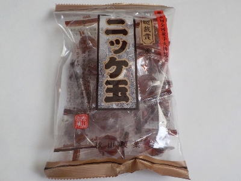
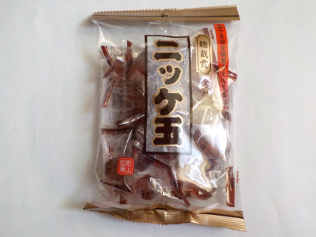
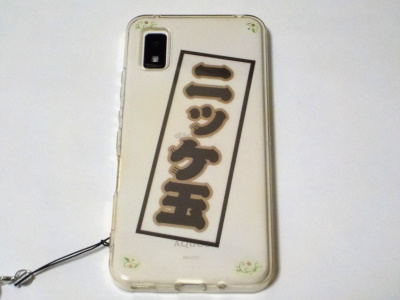
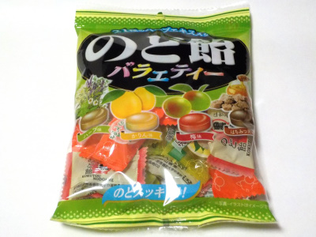
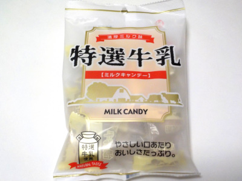
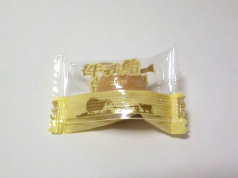

総裁賞のニッケ玉は美味しいです。
2024/06/25

全国菓子大博覧会っていうのは知っていましたが、それに総裁賞っていうのがあるんですね。
博覧会で賞があるって知りませんでした。
wikiで調べたらいろいろ書いてありました。賞の内容がわかりにくいですが、ニッケ玉は美味しいので賞に選ばれるのは当然かなと思いました。
ニッキのちょっと刺激的な味がいいですね。
福岡県田川郡香春町大字中津原2402番地の3
2024/06/25

全国菓子大博覧会っていうのは知っていましたが、それに総裁賞っていうのがあるんですね。
博覧会で賞があるって知りませんでした。
wikiで調べたらいろいろ書いてありました。賞の内容がわかりにくいですが、ニッケ玉は美味しいので賞に選ばれるのは当然かなと思いました。
ニッキのちょっと刺激的な味がいいですね。
2023/10/16

ニッキが入った飴玉です。京都の八ツ橋もニッキが入っていますが、こっちのニッキは辛味がありました。
ネットで調べたら、ニッケイの木の樹皮で作ったのがシナモンで、キッケイの木の根っこで作ったものがニッキだそうです。ニッキはシナモンより辛味があるそうなにで、ニッキ玉の味が普通っぽいようです。
甘辛のシナモン味で美味しい飴玉でした。

気に入ったのでスマホケースにパッケージの一部をはさみました。
2023/06/30

21種のハーブエキス入りの飴です。ハーブエキスは何が入っているのか分かりませんが、ミント味が一番強いと思いました。なのでみんなスーっとしました。
ハーブ味、カリン味、梅味、はちみつ黒糖味の4種類の飴が入ってます。たまたまかもしれないですが、私が買った袋にはハーブ味の飴が少ししか入っていませんでした。
個人的にはハーブ味よりも他の味が好きだと思ったので、ラッキーだと思いました。
近ごろは色んなタイプののど飴がありますが、以前はこんな感じのスーッとするものが多かったなーって思いながらなめました。
2023/03/01

ミルク味の飴というとミルキーを思い浮かべます。この飴はミルキーとは違う感じの飴でした。

ちょっと茶色くて大きめの飴です。
飴が硬くて口の中で溶けにくいので、ミルク味とか砂糖味がマイルドな感じがしました。（ガリガリ噛んで食べれば甘い味になります。）
私は濃い味が好きなので、途中からガリガリ噛んで食べました。